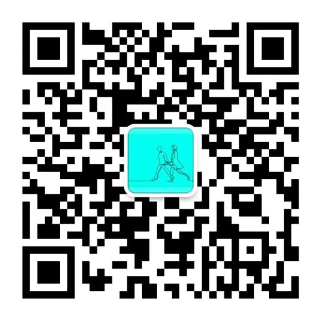
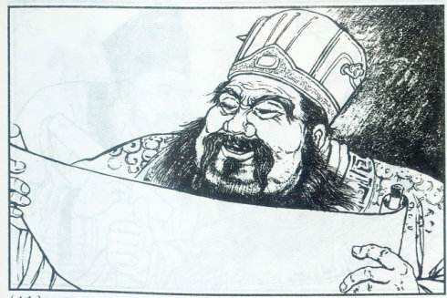

问答抽奖
规则
- 一共10题
- 回复答案的序号到“明明和虹虹”微信公众号
- 每题答对后立即开始抽奖
- 参与就有奖
- 累计答对题目最多的获得大奖
二维码，扫码关注，点击报名即可
第一题
biáng biáng 面这个字有笔画画
- 11. 56笔
- 12. 46笔
- 13. 36笔
- 14. 66笔
第一题 公布答案
biang的写法分简体和繁体两种写法，简体42笔，繁体56笔
丶丶乛丿丶丿乛一一乛乛丶丶一一一丨乛一乛乛丶一丨一一一乛丿丶一丨一一丨乛丶丶丶丶一丨一一一乛丿丶丨亅丶乚丶丶丶乛丶
一点撩上天，黄河两道湾，八字大张口，言字往里走，你一扭，我一扭；你一长，我一长；当中夹个马大王，心字底月字旁，留个钩挂麻谈糖，推个车车逛咸阳。
第一题 结果与抽奖
第二题
我们公司群的名字叫做董太师，指的是赤兔马历史上最早的主人，请问这个董太师叫什么名字？
- 21.董拙
- 22.董卓
- 23.董灼
- 24.董著
第一题 公布答案
22.董卓
第二题 结果与抽奖
第三题
赤兔pro天猫首发是哪一天
- 31: 7.15
- 32: 7.16
- 33: 7.17
- 34: 7.18
第三题 公布答案
32: 7.16
第二题 结果与抽奖
参与奖
答对最多的人
谢谢大家
特别鸣谢曹玮，玉华，莉莉，原子，再响提供技术和设计支持！
第一题 职业题
新郎从事IT行业，是个程序员，请问他日常的具体的工作是？
- 11.手机程序开发
- 12.网络游戏开发
- 13.人工智能程序开发
- 14.计算机维修
第一题 公布答案
11.手机程序开发
大家现在看到的基于微信公众号的问答系统就是新郎最近用业余时间做的

第一题 结果与抽奖
第二题 职业题
新娘从小成绩优异，2009年考入浙江大学，本硕连读，2016年毕业开始工作，请问她的职业是？
- 21. 律师
- 22. 医生
- 23. 老师
- 24. 公务员
第二题 公布答案
22. 医生
新娘现在是解放军117医院整形美容科的医生
第二题 结果与抽奖
第三题 父亲题
新郎的父亲年轻的时候做过边防战士，为祖国奉献过几年光阴，请问他当年是在哪里当的兵？
- 31.福建厦门
- 32.吉林延吉
- 33.云南红河
- 34.内蒙锡林郭勒
第三题 公布答案
32.吉林延吉
吉林延边朝鲜族自治州汪清县的XXX部队
第三题 结果与抽奖
第四题 母亲题
新郎的母亲在会计的岗位上勤勤恳恳工作了30年，今年4月光荣退休，请问她年轻时第一个工作单位在哪里？
- 41.果杂品公司
- 42.糖烟酒公司
- 43.烟草局
- 44.供销社
第四题 公布答案
42.糖烟酒公司
新郎的母亲先在糖烟酒工作，后来糖烟酒分家，去了烟草，一干就是XX年
第四题 结果与抽奖
第五题 姻缘题
新郎新娘是怎么认识的？
- 51.青梅竹马
- 52.广场相亲
- 53.同学介绍
- 54.旅行路上
第五题 公布答案
53.同学介绍
媒人是徐恒，新郎的中学同学，新娘的大学同学
第五题 结果与抽奖
第六题 爱好题
新郎喜欢运动，经常参加各地的马拉松，骑车，铁人三项，越野跑等比赛，请问他参加过最长的一场跑步比赛距离有多长？
- 61: 半程马拉松(21公里)
- 62: 全程马拉松(42.195公里)
- 63: 百里(50公里)
- 64: 百公里(100公里)
第六题 公布答案
64.一百公里(100公里)
新郎2018年01月27日在香港参加了HK100越野跑大赛，全长100公里，要翻越了几十座大山，新郎连续奔跑了近24小时，战胜了诸多困难，顺利到达终点，拿到小铜人的奖励~
第一题 结果与抽奖
第七题 爱好题
新娘喜欢潜水，最深能潜到水下多少米？
- 71: 3米
- 72: 8米
- 73: 18米
- 74: 30米
第七题 公布答案
74: 30米
新郎新娘2016年在菲律宾长滩岛考到了OW潜水证，可以潜到18米，2017在泰国普吉岛升级到AOW潜水证，可以潜到水下30米
第七题 结果与抽奖
第八题 旅行题
新郎新娘喜欢旅行，请问以下四个国家中哪个他们还没有去过？
- 81.越南
- 82.老挝
- 83.缅甸
- 84.文莱
第八题 公布答案
82.老挝
新郎新娘喜欢旅行，东南亚13个国家已经去过10个了
第八题 结果与抽奖
第九题 压轴题
新郎新娘于2018年6月6日在杭州市西湖区婚姻登记处领证结婚，请问这一天的节气是？
- 91.夏至
- 92.芒种
- 93.谷雨
- 94.惊蛰
第九题 公布答案
92.芒种
芒种，播种的好季节，祝他们播下爱的种子💗收获满满的幸福~！
第九题 结果与抽奖
第十题 绝杀题
以下哪个最有可能是这对新人孩子的名字？
- 101. 娄永春
- 102. 娄夏眠
- 103. 娄知秋
- 104. 娄冬冬
第十题 公布答案
101. 娄永春
南京江浦娄氏家族自明朝天启年间从浙江余姚迁到南京，人丁兴旺，已历十六代，根据家谱，"祖功宗德（正大光明），永邵丕基"的排序，明明的爸爸是宗字辈，明明是德字辈，儿子将会是永字辈，所以最可能的名字是娄永春~
第十题 结果与抽奖
参与奖
答对最多的人
谢谢大家
Fragments
Hit the next arrow...
... to step through ...
... a fragmented slide.
Fragment Styles
There's different types of fragments, like:
grow
shrink
fade-out
fade-right, up, down, left
fade-in-then-out
fade-in-then-semi-out
Highlight red blue green
Transition Styles
You can select from different transitions, like:
None -
Fade -
Slide -
Convex -
Concave -
Zoom
Themes
reveal.js comes with a few themes built in:
Black
(default) -
White
-
League
-
Sky
-
Beige
-
Simple
Serif
-
Blood
-
Night
-
Moon
-
Solarized
Slide Backgrounds
Set
data-background="#dddddd" on a slide to change the background
color. All CSS color formats are supported.
Image Backgrounds
<section data-background="image.png">Tiled Backgrounds
<section data-background="image.png" data-background-repeat="repeat" data-background-size="100px">Video Backgrounds
<section data-background-video="video.mp4,video.webm">... and GIFs!
Background Transitions
Different background transitions are available via the backgroundTransition option. This one's called "zoom".
Reveal.configure({ backgroundTransition: 'zoom' })Background Transitions
You can override background transitions per-slide.
<section data-background-transition="zoom">Pretty Code
function linkify( selector ) {
if( supports3DTransforms ) {
var nodes = document.querySelectorAll( selector );
for( var i = 0, len = nodes.length; i < len; i++ ) {
var node = nodes[i];
if( !node.className ) {
node.className += ' roll';
}
}
}
}
Code syntax highlighting courtesy of highlight.js.
Marvelous List
- No order here
- Or here
- Or here
- Or here
Fantastic Ordered List
- One is smaller than...
- Two is smaller than...
- Three!
Tabular Tables
| Item | Value | Quantity |
|---|---|---|
| Apples | $1 | 7 |
| Lemonade | $2 | 18 |
| Bread | $3 | 2 |
Clever Quotes
These guys come in two forms, inline:
The
nice thing about standards is that there are so many to choose from
and
block:
“For years there has been a theory that millions of monkeys typing at random on millions of typewriters would reproduce the entire works of Shakespeare. The Internet has proven this theory to be untrue.”
Intergalactic Interconnections
You can link between slides internally, like this.
Speaker View
There's a speaker view. It includes a timer, preview of the upcoming slide as well as your speaker notes.
Press the S key to try it out.
Export to PDF
Presentations can be exported to PDF, here's an example:
Global State
Set
data-state="something" on a slide and
"something" will be added as a class to the document element when the
slide is open. This lets you apply broader style changes,
like switching the page background.
State Events
Additionally custom events can be triggered on a per slide basis by binding to the
data-state name.
Reveal.addEventListener( 'customevent', function() {
console.log( '"customevent" has fired' );
} );
Take a Moment
Press B or . on your keyboard to pause the presentation. This is helpful when you're on stage and want to take distracting slides off the screen.
Much more
- Right-to-left support
- Extensive JavaScript API
- Auto-progression
- Parallax backgrounds
- Custom keyboard bindings